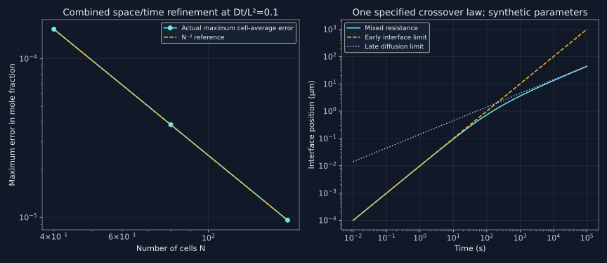

20. Conservative transport, interfaces and rapid solidification
A smooth simulation curve is evidence only after its balances, boundary conditions and limiting cases have survived checks. The hands-on lectures move from homogenization to migrating interfaces, ternary diffusion paths and modified solidification. This chapter reconstructs the governing problems and supplies open, synthetic benchmarks that can be inspected without commercial databases.
20.1 Translate the graphical setup into an initial-boundary-value problem
Lesson 49, 1:52–5:10. Topic span; mathematical constructions and numerical examples are explicitly original extensions.
The homogenization example specifies an initially linear nickel profile from approximately 0 to 50 atomic percent across 0.2 mm, an FCC phase branch and an isothermal treatment at 1473 K. Closed boundaries keep the total solute within the specimen. In the recording, profiles at successively longer times become flatter; an approximately flat curve around 300 hours is a reported result of that database/model combination, not a universal Fe–Ni homogenization time established here.
The mathematical inputs are the domain and geometry, component amounts, selected phase descriptions, thermodynamic and mobility functions, initial fields, thermal history and boundary flux or reservoir conditions. A thermodynamic database alone supplies no diffusion timescale. Naming a region “austenite” also does not establish that its selected mathematical phase is stable across every composition and temperature visited. The phase branch and permitted transformations need their own checks.
Our benchmark uses a planar interval $0\le z\le L$, $L=2\times10^{-4}$ m, constant synthetic $D=10^{-13}$ m²/s, initial solute fraction $u(z,0)=0.5z/L$ and reflecting ends. The mean is 0.25. This D is stipulated, not assessed Fe–Ni data. The initial line has a nonzero derivative at its endpoints, whereas the reflecting condition requires zero gradient for positive time. This initial-boundary incompatibility creates an immediate boundary layer; the diffusion equation still has the appropriate weak solution, and our convergence comparison occurs at a positive time.
In a single stable phase with the stated constant-density idealized transport law, the problem is
$$u_t=(D u_z)_z,\qquad D u_z(0,t)=D u_z(L,t)=0.$$A fixed surface composition would instead exchange solute with a reservoir, as in chapter 19. It must not be substituted for a reflecting end while retaining the same conserved-mean prediction. Cylindrical and spherical geometries likewise need area and volume factors in their flux balances; selecting a geometry changes the differential operator, not merely the plot labels.
20.2 A conservative finite-volume scheme with a discrete dissipation proof
Lesson 49, 9:32–10:50. Topic span; mathematical constructions and numerical examples are explicitly original extensions.
Divide the interval into N equal cells of width h. Let $u_i$ be a cell-average fraction. With constant total molar density, the common amount factor cancels from the fraction equation. At an internal face define $J_{i+1/2}=-D_{i+1/2}(u_{i+1}-u_i)/h$. Set both external face fluxes to zero. Integrating conservation over cell i and applying backward Euler gives
$$\frac{u_i^{n+1}-u_i^n}{\Delta t} =\frac{D_{i+1/2}(u_{i+1}^{n+1}-u_i^{n+1}) -D_{i-1/2}(u_i^{n+1}-u_{i-1}^{n+1})}{h^2}.$$The tridiagonal matrix has positive diagonal, nonpositive off-diagonal entries and row sum one. At a hypothetical negative minimum of the new solution, the diffusion contribution is nonnegative; the equation cannot connect that minimum to nonnegative old values. Applying the analogous argument to the upper bound proves a discrete maximum principle. No explicit-method time-step restriction is required for this backward-Euler property, though a large step still damages accuracy.
Summing over all cells cancels every internal face contribution exactly. Thus the discrete mean is unchanged apart from floating-point roundoff. To check smoothing, subtract that mean and call the resulting vector v. Use the inner product $\langle a,b\rangle_h=N^{-1}\sum_i a_ib_i$. Multiplying by the new v, summing and using the same face cancellation yields
$$\frac{\|v^{n+1}\|_h^2-\|v^n\|_h^2+ \|v^{n+1}-v^n\|_h^2}{2\Delta t} =-\frac{1}{Nh^2}\sum_{\rm faces}D_{i+1/2} (v_{i+1}^{n+1}-v_i^{n+1})^2\le0.$$Consequently variance cannot increase when all face diffusivities are nonnegative. This is a discrete quadratic dissipation statement for this benchmark; it is not a proof that every CALPHAD diffusion discretization decreases an arbitrary nonlinear material Gibbs energy. The latter requires consistent thermodynamic fluxes and a corresponding numerical analysis.
For a spatially piecewise constant positive diffusivity, the code uses the harmonic face value $2D_iD_{i+1}/(D_i+D_{i+1})$. This follows by adding the resistances of two half-cells carrying the same steady flux. It is appropriate for this fixed-coefficient interface construction. A composition-dependent coefficient would require specifying how nonlinear coefficients are evaluated and solving or otherwise controlling the resulting nonlinear time step; that problem is not silently covered by this linear solver.
20.3 Compare cell averages with an analytic solution
Lesson 49, 10:50–13:14. Topic span; mathematical constructions and numerical examples are explicitly original extensions.
With $y=z/L$ and $\tau=Dt/L^2$, the exact reflecting-boundary solution of the linear initial profile is
$$u(y,\tau)=\frac14-\sum_{\substack{m\ge1\\m\ {\rm odd}}} \frac{2}{(m\pi)^2}\cos(m\pi y)e^{-(m\pi)^2\tau}.$$The coefficients follow by integrating $2\int_0^1(0.5y)\cos(m\pi y)\,dy$: even modes vanish and odd ones have coefficient $-2/(m\pi)^2$. The constant is the conserved mean. Each cosine has zero endpoint derivative and solves the evolution equation. At positive time the rapidly decaying series can be differentiated termwise; its initial limit recovers the linear profile in the usual Fourier sense.
A finite-volume unknown is a cell average, so the code compares it with the integral of this series over that cell. Comparing it instead to a pointwise center value would mix two representations and add an avoidable error. At $\tau=0.1$, meshes N=40, 80 and 160 give maximum errors $1.534346948\times10^{-4}$, $3.842403998\times10^{-5}$ and $9.610107172\times10^{-6}$. The refinement ratios are 3.993195 and 3.998295.
Here the time step scales with $h^2$. Backward Euler has first-order temporal error and the central spatial approximation has second-order spatial error, so this combined refinement makes both leading errors scale as $h^2$. The observed factor four therefore does not establish that backward Euler itself is second order in time. A separate time-refinement study at fixed fine spatial mesh would be needed for that claim.
All time steps also check mean drift, the interval bounds and nonincreasing variance. A separate fixed-coefficient two-zone example with diffusivities in ratio four preserves mean 0.25 and ends with range 0.194902573–0.281842641 at the stipulated dimensionless time. The asymmetry reflects the diffusivity distribution; it does not permit solute to leave the closed ends.
20.4 Replace “looks flat” with a tolerance and a length scale
Lesson 49, 15:37–19:43. Topic span; mathematical constructions and numerical examples are explicitly original extensions.
Define homogenization by $\max_z|u(z,t)-0.25|\le\epsilon$. At late times the first cosine dominates, with amplitude $(2/\pi^2)e^{-\pi^2Dt/L^2}$. Setting that amplitude to epsilon gives the useful estimate
$$t_\epsilon\simeq\frac{L^2}{\pi^2D} \ln\!\left(\frac{2}{\pi^2\epsilon}\right).$$For epsilon=0.001 in fraction units, the synthetic result is 59.795740 hours. The summed bound from all higher odd modes at this estimated time is $3.908\times10^{-23}$. Strictly, the full endpoint deviation is the first-mode contribution plus that remainder; the displayed estimate is not an exact symbolic solution of the full-series threshold. At the quoted numerical precision the distinction is negligible, and the full series can be used for an exact tolerance search if needed.
The controlling length is the distance over which segregation must relax. Doubling it quadruples the time at fixed D and tolerance. A macroscopic billet dimension and a dendritic segregation wavelength are different lengths; choosing one or the other changes the question by orders of magnitude. The logarithmic dependence on tolerance also explains why demanding a perfectly uniform field in finite time is inappropriate for this diffusion problem.

20.5 A diffusion clock works for a carefully restricted nonisothermal problem
Lesson 51, 17:37–21:22. Topic span; mathematical constructions and numerical examples are explicitly original extensions.
For a spatially uniform prescribed temperature T(t), suppose diffusivity depends on time alone and the equation remains $u_t=D(t)u_{zz}$. Define $\Theta(t)=\int_0^tD(s)\,ds$, with units m². The chain rule gives $u_\Theta=u_{zz}$. Thus the constant-coefficient solution can be evaluated at dimensionless clock $\Theta/L^2$ instead of Dt/L². This is an exact change of variables under these assumptions.
The lecture's thermal history cools from 1173 K to 1050 K in 773 s and holds at 1050 K until 1000 s. Its later spoken/recognized reference to “1050 degrees Celsius” is inconsistent with the specified kelvin input; these notes retain 1050 K. With our synthetic Arrhenius law $D=10^{-5}\exp[-180000/(RT)]$ m²/s, numerical integration gives $\Theta=3.420519444474\times10^{-11}$ m², equivalent to 3079.122317 s at 1050 K. Doubling the Simpson subdivisions changes the clock by only $4.383\times10^{-14}$ relative.
This is a quadrature convergence check, not validation of the chosen activation parameters. It also does not make every nonisothermal transformation reducible to one clock. A moving interface generally has temperature-dependent equilibrium compositions, different diffusivities in different phases and possibly finite interface kinetics. Concentration-dependent diffusivity may not factor into a time function times a fixed spatial operator. Temperature gradients can introduce thermodiffusion and heat transport. Such cases require their actual coupled equations.
20.6 A one-sided moving boundary: solve diffusion and conservation together
Lesson 50, 1:02–5:09. Topic span; mathematical constructions and numerical examples are explicitly original extensions.
The ferrite-growth demonstration uses an approximately 0.15 mass-percent carbon parent, a low-carbon ferrite region, an FCC parent region and a prescribed temperature near 1073 K. The transcript gives an initial seed of roughly one nanometer in the slide description but enters two nanometers in the walkthrough; those are reported setup details, not an independently resolved board measurement. A finite seed changes the initial total amount, so a precisely specified closed benchmark must include it rather than claim the parent composition remains the exact global average.
For an open analytic check, use dimensionless compositions $c_s=0.02$, $c_I=0.4$, $c_0=0.15$, equal constant molar densities, solid on the left, parent on the right and parent diffusivity $D_I=10^{-12}$ m²/s. These are synthetic fraction values, not the steel mass-percent inputs. Neglect solid diffusion, assume local-equilibrium interface values and a semi-infinite parent. Seek $s(t)=2\lambda\sqrt{D_It}$ and
$$c(z,t)=c_0+(c_I-c_0) \frac{\operatorname{erfc}[z/(2\sqrt{D_It})]} {\operatorname{erfc}(\lambda)},\qquad z\ge s(t).$$This profile solves diffusion, reaches cI at the moving interface and c0 far away. Differentiation gives the positive parent-side flux at that interface:
$$J_R=\frac{\sqrt{D_I}(c_I-c_0)e^{-\lambda^2}} {\sqrt{\pi t}\operatorname{erfc}(\lambda)}.$$These fluxes are composition fluxes with the common molar-density factor divided out. With zero solid-side flux, the jump condition $s'(c_I-c_s)=J_R$ gives
$$\lambda e^{\lambda^2}\operatorname{erfc}(\lambda) =\frac{c_I-c_0}{\sqrt{\pi}(c_I-c_s)}.$$The right side lies between zero and $1/\sqrt{\pi}$. The left side increases from zero to that limit: substitute $y=\lambda+q/(2\lambda)$ in the error-function integral to write it as $(1/\sqrt{\pi})\int_0^\infty e^{-q-q^2/(4\lambda^2)}\,dq$, which increases with lambda. Thus this setup has one positive similarity root. The program finds lambda=0.712159358, interface position 45.040913 µm at 1000 s and speed $2.252045627298\times10^{-8}$ m/s.
A second check integrates the rejected solute in the parent. The error-function integral gives
$$\int_s^\infty[c(z,t)-c_0]\,dz =\frac{2\sqrt{D_It}(c_I-c_0)} {\operatorname{erfc}\lambda} \left[\frac{e^{-\lambda^2}}{\sqrt{\pi}} -\lambda\operatorname{erfc}\lambda\right] =(c_0-c_s)s.$$The enriched parent therefore contains exactly the solute rejected when length s converts from c0 to cs. This integral balance is more informative than checking interface speed alone. It does not, however, extend the semi-infinite solution through the saturation of a finite specimen.
In a closed finite equal-density specimen with these fixed coexistence endpoints, the equilibrium solid fraction is $(c_I-c_0)/(c_I-c_s)=0.657894737$. A stopped interface is not sufficient evidence for global equilibrium: pinning, a zero imposed interface mobility, vanishing available transport or a numerical stopping criterion can also stop it. Check the phase compositions, amount balances and thermodynamic conditions. Likewise the software option that activates a phase above a driving-force threshold is not automatically a stochastic classical-nucleation-rate calculation.
20.7 A diffusion path is a spatial composition curve, not one atom's trajectory
Lesson 51, 2:12–17:34. Topic span; mathematical constructions and numerical examples are explicitly original extensions.
The ternary example joins Fe–Cr-rich BCC material to Fe–Cr–Ni FCC material at 1373 K and compares composition profiles and diffusion paths with supplied experimental files. The transcript's thickness statements mix values and units; for example $0.5\times10^{-4}$ m would be 0.05 mm, whereas $5\times10^{-4}$ m would be 0.5 mm. Without the actual project/board audit, those inconsistent recognized values cannot establish an exact reproduced geometry. The reported overlays also do not supply an independent uncertainty analysis.
A diffusion path maps spatial position z into two independent composition coordinates at a specified time. A single-phase ternary has a third coordinate fixed by the sum constraint. With a moving sharp two-phase boundary, the limiting compositions can jump between phase endpoints; a connecting line in a plot must not be mistaken for a continuously sampled homogeneous composition field within that boundary. The path's admissibility combines thermodynamics, reference frames and all component flux balances.
Our separate stable single-phase toy has a constant diffusion matrix $D_{\rm ref}\begin{pmatrix}2&1\\1&2\end{pmatrix}$ for two independent fractions A and B, with $D_{\rm ref}=10^{-13}$ m²/s. Left/right compositions are (0.1,0.1) and (0.3,0.2). Diagonalizing into the sum and difference fields gives diffusivities $3D_{\rm ref}$ and $D_{\rm ref}$. Infinite-couple step solutions therefore use two different error-function widths. Recombining at z=20 µm and t=1000 s gives A=0.265001306 and B=0.172866267, with the dependent fraction positive.
The straight line through the initial endpoints would satisfy $B=0.1+0.5(A-0.1)$. The computed point lies 0.009634386 below it. Thus even a constant, positive-definite diffusion matrix can produce a curved composition-space path; curvature alone does not establish a phase transformation or a negative thermodynamic Hessian. These synthetic coefficients are unrelated to the recorded Fe–Cr–Ni mobility assessment.
20.8 Diffusion control means negligible interface resistance, not infinite speed
Lesson 51, 22:00–25:26. Topic span; mathematical constructions and numerical examples are explicitly original extensions.
A diffusion-controlled interface can move slowly because solute transport is slow even when interface redistribution is fast enough for local equilibrium. Calling interface mobility “infinite” in this limiting model means its kinetic resistance is neglected; it does not mean the actual interface velocity is infinite. Conversely, diffusion can be fast while a finite attachment process limits growth.
To expose the crossover, stipulate a planar mixed-resistance toy law $ds/dt=A/(s+\ell)$ with positive A in m²/s and length ell. The term s models a diffusion resistance growing with layer thickness; ell represents a constant interface resistance expressed in equivalent-length units. Integration from s=0 gives
$$\frac{s^2}{2}+\ell s=At,\qquad s(t)=\sqrt{\ell^2+2At}-\ell.$$For $s\ll\ell$, $s\simeq At/\ell$ is approximately linear. For $s\gg\ell$, $s\simeq\sqrt{2At}$ is asymptotically parabolic in the sense s² proportional to t. The local logarithmic exponent is
$$p=\frac{d\ln s}{d\ln t} =\frac{\ell+s/2}{\ell+s},$$which decreases continuously from one to one half. With $A=10^{-14}$ m²/s and ell=1 µm, p is 0.995073771, 0.788675135 and 0.535267281 at 1, 100 and 10000 s. The code evaluates the equivalent rationalized expression for s to avoid subtracting nearly equal numbers at early times.
This deliberately reduced law is not derived from the steel database and does not include nucleation or changing tie lines. It shows why fitting one exponent over a short interval cannot uniquely identify a mechanism. Isothermal diffusion-controlled finite systems also stop as equilibrium is approached; they need not maintain s² proportional to t throughout their entire history. A nonparabolic curve is therefore insufficient to prove interface control.
20.9 Back diffusion and trapping alter different assumptions
Lesson 52, 0:44–11:58. Topic span; mathematical constructions and numerical examples are explicitly original extensions.
Classical Scheil solidification keeps liquid mixed, neglects diffusion in previously formed solid and assumes local equilibrium at the growing interface. Back diffusion relaxes the frozen-solid assumption while retaining the chosen interface condition. Solute trapping relaxes interfacial equilibrium because partitioning cannot keep up with interface advance. Previously frozen solid composition in a Scheil history is not the same phenomenon as incomplete partitioning during a rapid interface crossing.
A useful back-diffusion scale is $\alpha=\int D_s(T(t))\,dt/\ell_d^2$, where ell-d is a specified diffusion distance. In a dendritic idealization it may be half the secondary arm spacing. Temperature-dependent diffusivity, cooling history and evolving geometry all matter. If spacing is modeled as $\lambda_2=c\dot T^{-n}$ over a fixed freezing range and Ds is held constant only for a scaling argument, then $\alpha\propto\dot T^{2n-1}$. Slower cooling increases time but can also increase spacing; neither effect should be omitted.
The illustrative choices Ds=10⁻¹³ m²/s, freezing range 100 K, c=50 µm with the cooling-rate unit convention built into c, n=1/3 and ell-d=lambda₂/2 give alpha=0.007426542, 0.016, 0.034470955 and 0.16 at 10, 1, 0.1 and 0.001 K/s. These dimensionless estimates do not calculate a eutectic fraction or a complete microsegregation profile. In particular, a positive alpha is not proof of full solid homogenization.
The official TC-Python 2026b Scheil API sections on back diffusion and spacing, inspected here, document the need for diffusion data and the spacing relation. The supplied notes do not run that API. Software version and database availability must be stated when interpreting a commercial result.
20.10 A bounded rapid-partitioning model and its limits
Lesson 52, 12:08–19:16. Topic span; mathematical constructions and numerical examples are explicitly original extensions.
Define the equilibrium partition coefficient consistently as $k_e=c_s/c_l$. A sentence in lesson 52 reverses that ratio before subsequent discussion uses solid over liquid; using one convention throughout avoids reversing the predicted trend. For a dilute continuous-growth partition model with prescribed nonnegative interface speed v and positive diffusive speed $v_D$, take
$$k(v)=\frac{k_e+v/v_D}{1+v/v_D}.$$The selected actual Pinomaa–Provatas (2018) preprint, pp.1–4, especially Eq.(1) was read. Its rapid-solidification study treats a controlled phase-field/sharp-interface mapping; those simulations and asymptotic proofs are not reproduced here. Its discussion also makes clear why numerical interface width can contaminate apparent trapping unless the model is appropriately mapped. The original 1982 Aziz PDF was located but local full-PDF acquisition was blocked, so these notes do not claim to have read that original paper.
For $0
With ke=0.2 and vD=1 m/s, speeds 0, 0.1, 1 and 10 m/s give k=0.2, 0.272727273, 0.6 and 0.927272727. For a deliberately frozen constant speed, inserting that constant k into the simple mixed-liquid/no-solid-diffusion solute balance gives $c_l=c_{\rm initial}(1-f_s)^{k-1}$. At fs=0.9 and initial fraction 0.04, the resulting liquid fractions are 0.252382938, 0.213467969, 0.100475457 and 0.047291955. The associated mean solid fraction composition is calculated by exact total-solute conservation.
This hybrid toy demonstrates reduced enrichment when partitioning approaches unity. It does not predict a liquidus, eutectic amount, heat flow, velocity history or final equilibrium state. Similar-looking solidification curves can arise from different physical assumptions; reduced segregation from trapping does not restore global equilibrium. A high cooling rate does not alone determine v: in a steady translating thermal field one may use $\dot T=Gv$ with a specified gradient G, but different gradients give different interface speeds at the same cooling rate.
Likewise a projected scan-speed relation needs a specified interface normal and angle; the official API documents a scan-speed cosine projection for its model setup. It is not an identity that every laser scan speed equals the local solidification velocity. The absence of a bulk mobility database in one trapping template also does not imply the microscopic redistribution kinetics contain no diffusivity scale: vD is precisely additional kinetic input.
20.11 Run the benchmarks
Download the exact standard-library program. It performs mesh refinement, checks conservation and bounds at every diffusion step, evaluates the thermal integral twice, tests local and integrated moving-boundary balances and checks the bounded partitioning examples. Reported agreement is with these specified mathematical problems.
"""Original conservative transport benchmarks; no commercial solver or alloy fit."""
from math import exp,log,sqrt,pi,erf,erfc,sin,cos,ceil,isclose
R=8.31446261815324
length,diff,mean=2e-4,1e-13,.25
def exact_average(i,n,tau):
a,b=i/n,(i+1)/n
return mean+sum(-2/(m*pi)**2*exp(-(m*pi)**2*tau)*
(sin(m*pi*b)-sin(m*pi*a))/(m*pi*(b-a))
for m in range(1,301,2))
def tridiagonal(lower,diag,upper,rhs):
n=len(diag);c=upper[:];d=rhs[:];pivot=diag[0]
if n>1:c[0]/=pivot
d[0]/=pivot
for i in range(1,n):
pivot=diag[i]-lower[i-1]*c[i-1]
assert pivot>0
if i<n-1:c[i]/=pivot
d[i]=(d[i]-lower[i-1]*d[i-1])/pivot
for i in range(n-2,-1,-1):d[i]-=c[i]*d[i+1]
return d
def evolve(n,tau,variable=False):
u=[.5*(i+.5)/n for i in range(n)]
cell_d=[1. if not variable or i<n//2 else 4. for i in range(n)]
face=[2*a*b/(a+b) for a,b in zip(cell_d,cell_d[1:])]
steps=ceil(tau*n*n/.5);step=tau/steps;r=step*n*n
lower=[-r*d for d in face];upper=lower[:]
diag=[1+r*((face[i-1] if i else 0)+(face[i] if i<n-1 else 0)) for i in range(n)]
mass0=sum(u)/n;var0=sum((x-mass0)**2 for x in u)/n
max_drift=0.;largest_variance_rise=0.;oldvar=var0
for _ in range(steps):
u=tridiagonal(lower,diag,upper,u)
mass=sum(u)/n;var=sum((x-mass0)**2 for x in u)/n
max_drift=max(max_drift,abs(mass-mass0))
largest_variance_rise=max(largest_variance_rise,var-oldvar)
assert min(u)>-1e-12 and max(u)<.5+1e-12
oldvar=var
assert max_drift<1e-12 and largest_variance_rise<1e-14
return u,steps,max_drift,oldvar
errors=[]
for n in (40,80,160):
u,steps,drift,var=evolve(n,.1)
err=max(abs(u[i]-exact_average(i,n,.1)) for i in range(n))
errors.append(err)
print(f'Closed diffusion N={n}: steps={steps}, max error={err:.9e}, mean drift={drift:.3e}, variance={var:.9e}')
assert errors[0]/errors[1]>3.8 and errors[1]/errors[2]>3.8
print(f'Convergence ratios={errors[0]/errors[1]:.6f},{errors[1]/errors[2]:.6f}; second-order combined refinement')
u,steps,drift,var=evolve(80,.1,True)
print(f'Variable-D closed specimen: mean={sum(u)/80:.12f}, range={min(u):.9f}..{max(u):.9f}; every-step conservation, positivity and variance checks PASS')
tol=.001
tau_est=log((2/pi**2)/tol)/pi**2
time_est=tau_est*length**2/diff
remainder=sum(2/(m*pi)**2*exp(-m*m*pi*pi*tau_est) for m in range(3,301,2))
assert remainder<1e-19
print(f'First-mode homogenization threshold {tol}: time={time_est/3600:.6f} h; higher-mode bound={remainder:.3e}')
# Spatially uniform prescribed temperature; no thermodiffusion term.
d0,q=1e-5,180000.
def diffusivity(t):return d0*exp(-q/(R*t))
def simpson(f,a,b,n):
assert n%2==0
h=(b-a)/n
return h/3*(f(a)+f(b)+sum((4 if i%2 else 2)*f(a+i*h) for i in range(1,n)))
def temperature(t):return 1173+(1050-1173)*t/773 if t<=773 else 1050.
def clock(n):return simpson(lambda t:diffusivity(temperature(t)),0,773,n)+227*diffusivity(1050)
theta=clock(2000);coarse=clock(1000)
assert abs(theta-coarse)/theta<1e-9
print(f'Thermal diffusion clock={theta:.12e} m2; equivalent1050K time={theta/diffusivity(1050):.6f} s; quadrature relative difference={abs(theta-coarse)/theta:.3e}')
# One-sided planar local-equilibrium growth into a semi-infinite parent.
cs,ci,c0,di=.02,.4,.15,1e-12
ratio=(ci-c0)/(sqrt(pi)*(ci-cs))
lo,hi=0.,3.
for _ in range(100):
lam=(lo+hi)/2
if lam*exp(lam*lam)*erfc(lam)<ratio:lo=lam
else:hi=lam
lam=(lo+hi)/2;t=1000.;position=2*lam*sqrt(di*t)
velocity=lam*sqrt(di/t)
flux=di*(ci-c0)*exp(-lam*lam)/(sqrt(pi*di*t)*erfc(lam))
assert isclose(velocity*(ci-cs),flux,rel_tol=1e-13)
excess=2*sqrt(di*t)*(ci-c0)*(exp(-lam*lam)/sqrt(pi)-lam*erfc(lam))/erfc(lam)
assert isclose(excess,(c0-cs)*position,rel_tol=1e-13)
print(f'One-sided interface: lambda={lam:.9f}, s1000={position*1e6:.6f} um, v={velocity:.12e} m/s; local jump and integrated solute PASS')
fraction=(ci-c0)/(ci-cs)
print(f'Finite closed equal-density equilibrium: solid fraction={fraction:.9f}; semi-infinite growth is not valid through finite saturation')
# Two coupled constant coefficients, stable single phase, independent mole fractions.
z=2*sqrt(1e-13*1000.)
eplus=erf(z/(2*sqrt(3e-13*1000.)));eminus=erf(z/(2*sqrt(1e-13*1000.)))
xa=.2+(.3*eplus+.1*eminus)/4
xb=.15+(.3*eplus-.1*eminus)/4
offset=xb-(.1+.5*(xa-.1))
assert 0<xa<1 and 0<xb<1 and xa+xb<1 and abs(offset)>.005
print(f'Coupled diffusion path at20um: xA={xa:.9f}, xB={xb:.9f}, deviation from end-member straight line={offset:.9f}')
# Additive interface and diffusion resistances, an explicitly defined toy law.
aa,ell=1e-14,1e-6
mixed=[]
for t in (1.,100.,10000.):
s=2*aa*t/(sqrt(ell*ell+2*aa*t)+ell)
exponent=(ell+s/2)/(ell+s)
assert isclose(s*s/2+ell*s,aa*t,rel_tol=1e-13)
mixed.append((t,s*1e6,exponent))
print('Mixed-control (time_s,position_um,local exponent): '+str([(t,round(s,9),round(p,9)) for t,s,p in mixed]))
rates=(10.,1.,.1,.001)
fourier=[4*1e-13*(100/r)/(50e-6*r**(-1/3))**2 for r in rates]
print('Back-diffusion scale (K/s, integratedD/halfspacing2): '+str([(r,round(f,9)) for r,f in zip(rates,fourier)]))
# Dilute continuous-growth partition law at prescribed fixed velocity.
ke,vd,initial,fs=.2,1.,.04,.9
partitions=[]
for speed in (0.,.1,1.,10.):
k=(ke+speed/vd)/(1+speed/vd)
liquid=initial*(1-fs)**(k-1)
average_solid=(initial-(1-fs)*liquid)/fs
assert isclose(fs*average_solid+(1-fs)*liquid,initial,abs_tol=1e-14)
partitions.append((speed,k,liquid))
print('Fixed-speed trapping toy (v_m/s,k,remaining liquid x): '+str([(v,round(k,9),round(c,9)) for v,k,c in partitions]))
assert isclose((.9-ke)/(1-.9),7.)
print('All checks PASS; no commercial demo or multicomponent solidification history was reproduced')
Closed diffusion N=40: steps=320, max error=1.534346948e-04, mean drift=2.109e-15, variance=2.862217841e-03 Closed diffusion N=80: steps=1280, max error=3.842403998e-05, mean drift=7.550e-15, variance=2.854645264e-03 Closed diffusion N=160: steps=5120, max error=9.610107172e-06, mean drift=2.870e-14, variance=2.852750284e-03 Convergence ratios=3.993195,3.998295; second-order combined refinement Variable-D closed specimen: mean=0.250000000000, range=0.194902573..0.281842641; every-step conservation, positivity and variance checks PASS First-mode homogenization threshold 0.001: time=59.795740 h; higher-mode bound=3.908e-23 Thermal diffusion clock=3.420519444474e-11 m2; equivalent1050K time=3079.122317 s; quadrature relative difference=4.383e-14 One-sided interface: lambda=0.712159358, s1000=45.040913 um, v=2.252045627298e-08 m/s; local jump and integrated solute PASS Finite closed equal-density equilibrium: solid fraction=0.657894737; semi-infinite growth is not valid through finite saturation Coupled diffusion path at20um: xA=0.265001306, xB=0.172866267, deviation from end-member straight line=-0.009634386 Mixed-control (time_s,position_um,local exponent): [(1.0, 0.009950494, 0.995073771), (100.0, 0.732050808, 0.788675135), (10000.0, 13.177446879, 0.535267281)] Back-diffusion scale (K/s, integratedD/halfspacing2): [(10.0, 0.007426542), (1.0, 0.016), (0.1, 0.034470955), (0.001, 0.16)] Fixed-speed trapping toy (v_m/s,k,remaining liquid x): [(0.0, 0.2, 0.252382938), (0.1, 0.272727273, 0.213467969), (1.0, 0.6, 0.100475457), (10.0, 0.927272727, 0.047291955)] All checks PASS; no commercial demo or multicomponent solidification history was reproduced
20.12 Problems with complete solutions
1. What does a factor-four convergence ratio establish?
Interpret the three mesh errors when the time step scales as h².
Solution
The ratios are 3.993195 and 3.998295, consistent with an error proportional to h² in this combined refinement. The temporal method is backward Euler, with error proportional to delta-t; choosing delta-t proportional to h² makes that error scale the same way as second-order spatial error. The experiment therefore supports second-order combined convergence, not second-order time integration. Comparing exact cell averages also avoids confusing a finite-volume unknown with a point sample.
2. Prove conservation without invoking the tridiagonal solver
Why does the scheme retain its mean even for spatially varying positive face coefficients?
Solution
Sum the cell equations. Each internal face enters the left cell as outflow and the right cell as inflow with equal magnitude. Only the two external fluxes remain, and they are zero. Hence the new sum equals the old sum regardless of the face coefficient values. Positivity is a different property supplied by the matrix/maximum-principle argument; conservation alone would not prevent an unstable scheme from producing negative concentrations.
3. How long does homogenization take?
Use the first mode and explain the meaning of its tolerance.
Solution
Set $(2/\pi^2)\exp(-\pi^2Dt/L^2)=0.001$. With L=0.2 mm and stipulated D=10⁻¹³ m²/s, this gives 59.795740 hours. The fraction tolerance is 0.001, or 0.1 percentage point. Higher odd modes add at most 3.908×10⁻²³ at this time, so the first-mode estimate has a negligible stated remainder at displayed precision. Doubling L multiplies the time by four. This result is not the recorded assessed Fe–Ni value and does not require exact uniformity at finite time.
4. When can temperature history be replaced by one number?
Derive the diffusion clock and identify a moving-boundary obstruction.
Solution
If $u_t=D(t)u_{zz}$ with spatially uniform positive D(t), then $\Theta' =D$ and $u_t=D u_\Theta$ imply $u_\Theta=u_{zz}$. The synthetic ramp/hold gives clock 3.420519444474×10⁻¹¹ m², equivalent to 3079.122317 s at 1050 K. A moving boundary whose equilibrium phase compositions change with temperature does not retain the same transformed boundary conditions, so this substitution alone does not solve its full problem. Thermodiffusion from spatial temperature gradients is also excluded from the derivation.
5. Verify rejected-solute conservation at a moving interface
Explain why both the local jump and the integrated parent excess are necessary checks.
Solution
The similarity profile gives a gradient proportional to $-(c_I-c_0)e^{-\lambda^2}/[\sqrt{\pi D_It}\operatorname{erfc}\lambda]$. Multiplying by minus DI and equating to $s'(c_I-c_s)$ gives the scalar root equation and lambda 0.712159358. Integrating the parent excess then gives $(c_0-c_s)s$: every converted length rejects exactly this excess into the parent. At 1000 s, s=45.040913 µm and v=2.252045627298×10⁻⁸ m/s satisfy the local jump. A finite closed specimen eventually approaches fraction 0.657894737 and needs a finite-domain solution instead of unlimited similarity growth.
6. Must a diffusion path be straight?
Derive the two-mode explanation and check the supplied point.
Solution
The symmetric matrix has eigenvectors (1,1) and (1,−1), with eigenvalues 3Dref and Dref. The endpoint jumps in sum and difference are 0.3 and 0.1. Each mode spreads with its own error-function width, so their ratio varies with z. Recombination at 20 µm yields A=0.265001306 and B=0.172866267; the endpoint straight line would give 0.182500653. Their difference is −0.009634386. Curvature therefore occurs in this stable single-phase toy without invoking a two-phase tie line.
7. Why does the growth exponent change?
Derive the local exponent of the mixed-resistance toy and qualify its interpretation.
Solution
Integrating ds/dt=A/(s+ell) gives At=s²/2+ell s. Hence $p=(t/s)(ds/dt)=(s/2+\ell)/(s+\ell)$. It tends to one when the constant interface resistance dominates and to one half when the growing diffusion resistance dominates. The example gives 0.788675135 at 100 s, so it is in a crossover. This does not establish that every measured nonparabolic curve is interface controlled; finite reservoirs, evolving temperature and changing thermodynamic endpoints can also change the exponent.
8. Is slower cooling always a simple inverse-rate gain in back diffusion?
Include the change in secondary spacing.
Solution
At fixed freezing interval the available time scales as 1/rate. If spacing scales as rate⁻ⁿ, its square scales as rate⁻²ⁿ. Therefore alpha scales as rate²ⁿ⁻¹. For n=1/3, a ten-thousand-fold reduction in rate increases alpha by $10000^{1/3}=21.544347$, not10000. The values 0.007426542 and 0.16 exhibit that ratio. This is a scaling result with constant stipulated Ds and a chosen empirical spacing form, not a quantitative prediction for an assessed dendritic alloy.
9. How fast is nearly complete trapping in this model?
Solve for k=0.9 when ke=0.2, then distinguish it from back diffusion.
Solution
Rearrange $k(1+v/v_D)=k_e+v/v_D$ to get $v/v_D=(k-k_e)/(1-k)$. The target gives 7, hence 7 m/s for the stipulated vD. Reaching exactly one would require an unbounded ratio in this particular continuous-growth law. Back diffusion redistributes solute within formed solid while retaining the chosen interface rule; trapping changes partitioning during interface advance. Either may reduce segregation under some conditions, but they are physically distinct and neither proves final thermodynamic equilibrium.